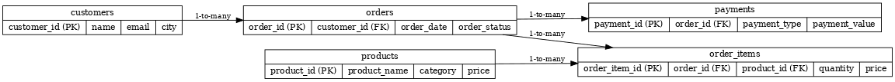

3. Power BI Dashboard
The following images showcase different views from the interactive Power BI dashboard:


End-to-end analytics project using MySQL, Python, and Power BI to uncover customer, sales, and payment insights.
This project analyzes an e-commerce dataset to identify trends, customer behavior, and sales performance. The workflow includes:
The database contains five main tables: customers, orders, order_items, payments, and products.
The following images showcase different views from the interactive Power BI dashboard: